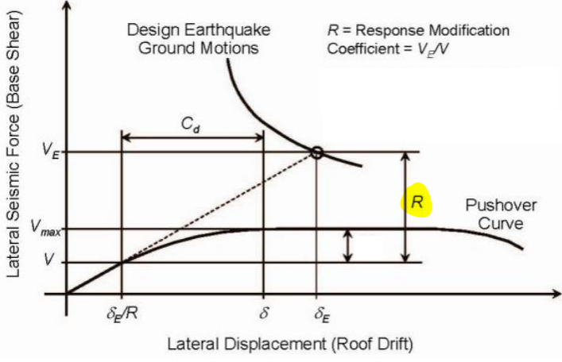
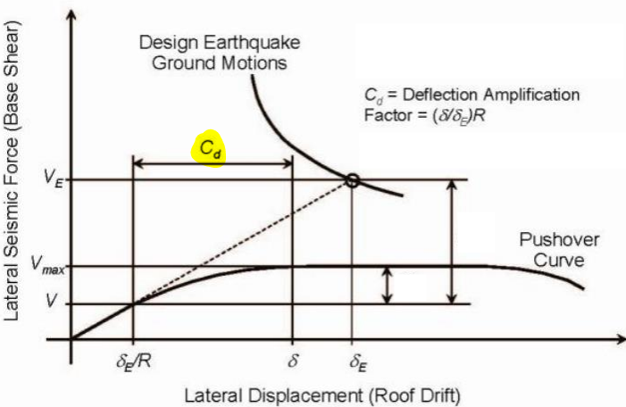
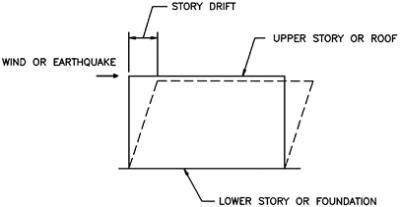

Lecture 6: Ductility
Ductility
This lecture focuses on the concept of ductility, which is an integral part of seismic building design and is tested on the Seismic Exam via the requirements of ASCE 7-16.
To understand ductility, let us consider an example using a plastic spoon and a steel spoon. Plastic spoons are brittle, which means that if you try to bend a plastic spoon, it snaps! Similarly, when an earthquake hits a building and if the resulting forces induced in the structure are greater than the strength of the building elements, the brittle elements will snap just like the plastic spoon, and lose strength. An example of brittle structural elements is the crushing of an unreinforced concrete block when compressive forces are applied.
Conversely, if you bend a new steel spoon with your hands, it probably won’t snap. It would bend and deform, but not break like a brittle plastic spoon. The metal spoon could break if you bend it in different directions repetitively; however, that’s failure due to fatigue. For now, that’s not important for discussion. What matters is the idea that even if you deform the steel spoon beyond its elastic strength limit, it is still capable of carrying load. In other words, you can still eat your cereal with the bent steel spoon without worrying that it will break. The same can be correlated to ductile elements in a structure, such as a beam in a moment frame.
The ductility of a structure and its individual components are very important for resisting strong earthquake shaking. The structural system utilizies this ductility efficiently by allowing the framing to undergo inelastic response and deforming beyond their elastic limit. Building codes help to ensure that the structures are designed to have sufficient ductility for seismic resistance.
Keeping the essence of ductility in mind, this lecture will cover the following topics from the Exam Requirements:
- The Different Structural Systems and Their Design Parameters
- Limitations of Different Structural Systems
- Structural System Seismic Coefficient Application
- Selection of Seismic Factors and Coefficients Required for Design
- Effects of Ductility and Damping on Seismic Performance
Ductility in Lateral Systems
Ductility is one of the most important factors affecting the seismic performance of a building. The importance of structural ductile detailing was recognized after the severe damage to many modern, code-conforming buildings during the 1971 San Fernando earthquake. One of the buildings of a multi-building complex called The Olive View Hospital, that housed ambulances and emergency vehicles, collapsed. Additional damages led to large permanent drifts in the structure, which left the building uninhabitable. The reason behind the poor performance of this building was that its design did not include the voluntary provisions for ductile reinforced concrete frame design from the 1967 edition of the UBC.
In response to the damages sustained by The Olive View Hospital and other buildings, major changes have been made to the building codes in the following years. One such change is that the voluntary provisions for ductile concrete frames are now mandatory in highly seismic zones, and similar provisions have been developed and introduced into the code for other structural systems. For example, AISC 341 is used for ductile detailing of various load resisting structures such as:
- Concentrically Braced Frames
- Eccentrically Braced Frames
- Buckling-Restrained Braced Frames
- Moment Frames
- Shear Walls
- Dual Systems (containing both moment frames and shear walls or braced frames)
Based on the amount of ductility provided when these systems were properly designed and detailed, ASCE 7-16 subcategorized these lateral systems as:
- Ordinary
- Intermediate
- Special
The special systems are the most ductile, which means that they are able to resist strong ground shaking inelastically. Ordinary structures have low ductility and less ability to resist strong ground shaking inelastically. Intermediate structures have characteristics between ordinary and special structures.
The seismic response modification factor, R, depends upon the ductility of the system and can be determined using Table 12.2-1 of ASCE 7-16. For high ductility systems, such as special systems, the R value is relatively large, and vice-a-versa.
ASCE 7-16 table 12.2-1
The concept of ductility is very important in seismic engineering, but for the Seismic Exam you will only be expected to know how to find the values in the ASCE 7 tables, and understand that a larger R value means more ductility and a greater reduction to seismic base shear. Further understanding would be more important for a graduate level degree in structural engineering.
Inelastic Behavior
During strong earthquake motion, structures are expected to survive without excessive loss of strength and stiffness, since an excessive amount of stiffness loss can lead to its collapse.
During an earthquake, the structural system should have high ductility and good energy dissipation capacity. The inelastic behaviour of the structure is a major factor that contributes to the dissipation of shaking energy due to earthquakes. The catch here is that some damage (yielding) to the structure is accepted and expected. So, lateral systems are anticipated to behave inelastically by performing in their non-linear region. The ability for a system to enter the non-linear region and continue to resist force represents “good” ductility.
Note: good ductility depends on the ability of a system to enter the non-linear region and continue to resist force; however, ductility in itself is not a very positive thing. For example, gum is ductile because it can be stretched extensively compared to its original size. Despite this, gum itself holds no capacity, it is very weak. The same thing must be kept in mind for ductile systems: the ductility of a building does NOT indicate the strength of the building itself. This trait comes from other factors, such as the material properties.
The question arises: Why not just design structures for elastic behavior? The reason is that designing for structures to behave inelastically is more economical. With good detailing, structures can be designed for forces that are much lower than those required for elastic response.
To understand this topic in more depth, let’s do a quick recap on stiffness as it relates to deflection. Stiffness comes from the geometry and material properties. Below is the equation for the deflection of a cantilevered beam.

Deflection = PL3/3EI = (Load) (Length) / (Material Stiffness) (Geometric Stiffness)
As shown, the deflection decreases when the material/geometric stiffness increases. As the load increases, the deflection increases linearly at the same rate, in the linear elastic region, up until a certain “point” - the yield stress. A graphic representation is shown below. Any load that is applied after the yield stress results in plastic (non-linear) deflection of the beam. If more loads are applied to the beam, it will eventually break. The deflection in the plastic region increases more rapidly because the stiffness is decreased, resulting in permanent deformation. Once the loading is removed, the beam will be permanently deformed! This is not a good thing for buildings because the damaged building will not be safe for people to use.

Here is a visual explanation of elastic and inelastic response: https://www.youtube.com/watch?v=frGL1jTnDsg
In design, structural engineers typically check the deflection of beams in the linear elastic region. The loading of beams from people and other transient loads is fairly common so you wouldn’t want the beams to permanently yield during ordinary everyday events. We need beams to serve their purpose: to support very frequent gravity loads.
Now compare the loading of a beam to that of the lateral system for a building. From previous lectures, a lateral system is designed to resist wind or earthquake (lateral) forces. Even though these forces are infrequent, we still have to design for them because lateral forces can cause a substantial amount of building damage/collapse and loss of life. As a result, lateral systems are designed to perform in their plastic deformation (non-linear) region. ASCE 7-16 uses the response modification factor, R, to account for the ability of a lateral system to withstand plastic (non-linear) deformation without failing, otherwise known as ductility. Shown below are the equations for the seismic response coefficient Cs and the seismic base shear V.
ASCE 7 Eqn 12.8-2
Cs = Sds / (R/Ie) = (Acceleration) / ((Ductility)/(Seismic Importance Factor))
ASCE 7 Eqn 12.8-1
V = Base Shear = CsW = Cs x (weight of structure)
Image via concrete coalition

The image above shows the anticipated behavior of a lateral system subjected to base shear, V. Notice that from origin to S, the curve is linear, while the remaining is non-linear. The adjustments of R and the deflection amplification factor, Cd, are used to account for the true behavior of the system without requiring the engineer to have to deal with the curved portion of the graph. The Cd factor is used to account for the actual greatest potential (extra) deflection that a system would experience during the non-linear portion of the graph. From the graph, the elastic seismic base shear force, Ve, is divided by the R factor to provide the design seismic shear force, Vs. This shows that larger values of the R factor will give a larger reduction to the overall seismic forces.
This means that linear equations can be used to calculate the displacement and forces on the structure, instead of finding the exact equations of the curved lines. This method simplifies the design procedure while still providing a means to create building structures that satisfy society’s safety expectations. Note: This graph is also given in section C12 of ASCE 7-16 with slightly more details as shown below.
This graph is nicely explained by the SEAOC Seismology Committee in the following article: https://www.structuremag.org/wp-content/uploads/2014/08/C-GuestCol-SeismicDesign-SEAOC-Sept081.pdf
There are other impacts from allowing a building lateral system to perform in the non-linear range. When a system enters the non-linear range, the period of the structure increases, which will typically lower the design base shear. On the response spectrum below, you can see that accelerations get lower as the period increases in certain regions. As the period of a system increases, the critical damping ratio (λ) may increase as well. λ is a reference level that denotes the least amount of damping required to revert a system back to its original position (without any continuing vibrations that result). λ is typically taken as 5% for most systems.

The R value scales down seismic forces to account for the success of the lateral system in taking load beyond the linear-elastic region. This is due to the increase of the critical damping ratio in the non-linear range, upon which the seismic energy is further absorbed, resulting in a reduction of the seismic forces. All of this means that we can safely lower the seismic design forces for analysis based on the ductility.
Is it OK to design a lateral system to perform past its initial yielding point?
Since the intent of the building code is to prevent major building collapses during these events, it is acceptable by code to rely on the full capacities of the lateral system in the plastic (non-linear) range. There just isn’t enough benefit to keep buildings in the linear-elastic region because the result would be a very expensive structure that no one would want to build. As stated before, building damage from anticipated vertical loads is not acceptabledesired; however, it is different for a lateral force resisting system. In the event of a design-level earthquake, a lateral system can be expected to have some permanent damage or capacity loss, but this is still better than a full collapse!
Cd - Deflection Amplification Factor
The deflection amplification factor Cd accounts for the inelastic behavior in a structure based on the design earthquake ground motions. As a structural engineer, our job is to limit damage and prevent loss of life. The R factor relates to the ductility of a building; a higher R value means higher ductility and a greater reduction of seismic base shear. This means that seismic forces can be reduced based on ductility, which accounts for the success of the lateral system to continue resisting loads even in its inelastic range. While reducing the seismic force for our analysis is acceptable, this becomes an issue when trying to determine the exact deflection. If we use simple linear analysis to determine deflection, and use our reduced base as the input, the result will be a deflection based on pure elastic behavior.
This can be problematic because we know that the structure is going to behave inelastically during the design level earthquake, so using a typical elastic deflection calculation won’t be accurate. To account for more realistic conditions, deflection in the plastic/inelastic state is considered for design by introducing the deflection amplification factor, Cd.
So what is Cd used for? Cd is used in structural design (and the Seismic Exam) to factor up drift that was originally calculated with seismic forces that were scaled down by R. What is drift? Unfortunately, it is not related to cars or Fast and Furious! In structural engineering, a drift is the relative displacement between two adjacent floors. Below is a simple illustration of a building experiencing drift.
Image via Engineering 360
For now, just understand what drift looks like. Specific calculations will be explained in later lectures. Note that Cd can be found in Sections 12.8.6, 12.8.7 and, 12.9.2 of ASCE 7-16.
Ω - Overstrength Factor
Seismic design does not intend for a structure’s lateral system to remain elastic during an earthquake; however, there are other structural elements that will effectively transfer lateral loads for which inelastic behavior is not desired. Omega factor increases the design load to specific elements ensuring stronger cross-sections and connections that can stay elastic during a design level earthquake. If that’s the case, why not apply the omega factor to the entire structure? It would ensure that a structure will have no failure since we are designing for the largest load any earthquake can occur on it. However, designing every element to be stronger would be costly and inefficient.

There are also other factors that could affect strength of a connecting member, such as strain hardening. For example, strain hardening would result in more yielding strength, but ductility decreases (material becomes more brittle)! All of these effects that have been discussed gives a glimpse of “overstrength”. It is worth noting that the overstrength coefficient, Ω, accounts for the possible exceedance of the actual design level seismic forces. Therefore, depending on which building system shall be designed, there are specific conditions in ASCE 7-16 that deal with overstrength.
Note: Ω should only be used when the code requires it. Otherwise, it is not required to be accounted for in every design scenario. Overstrength factors are applied to components that cannot yield.
Here are a few framing conditions where Ω are most commonly tested on the seismic exam.
Image via WoodWorks

In this figure, the elements requiring overstrength are indicated by the red lines. The collectors are resisting the vertical component of seismic load to support the structure. While they transfer lateral loads, they are not quite the LRFS associated with the R value for the structure. Since these collectors do not have the same level of ductility as the LRFS, we don’t rely on their ability to perform well in the nonlinear region. To keep the collectors elastic, we should design them to handle the max anticipated force from the shear walls, which is the design level shear wall force multiplied by Ω.
Image via WoodWorks

Similarly in this figure, we can see how an earthquake would affect the lateral system and the connection at the shear wall must be designed with an overstrength factor.
So here a few sections that Ω is applied in:
- 12.2.5.2 cantilever column systems
- 12.3.3.3 Elements supporting discontinuous walls or frames
- 12.10.2.1 Collector Elements
- 12.3.8.4 Battle Piles
- 12.3.8.5 Pile Anchorage
- 12.3.8.6 Splices of Pile segments
We will show more explicit examples of how to use Ω in later lectures. For now, familiarize yourself with where Ω is located in ASCE 7-16 as shown above.
Sample Questions:
Question: You are in charge of selecting the lateral system for a new building structure. For which of the following systems might the base shear be smallest? Assume that the overall weight of the structure will be set to 100,000 lbs.
A: Ordinary Precast Shear Walls
B: Ordinary plain AAC masonry shear walls
C: Steel special moment frames
D: Steel special cantilever column system
Answer: The question is asking for the smallest base shear. Base shear depends on the building mass, site location, building use type, and lateral system. The question doesn’t provide all of this information, but that’s OK because we are only doing a comparison between different lateral systems, we don’t need an exact base shear. The variable here is the type of lateral system. Using ASCE 7 eqns 12.8-1 and 12.8-2, we see that the base shear is inverse to the R value. So we should determine the different R values for each system and select the system with the largest R value to represent the smallest base shear.
Using ASCE 7 Table 12.2-1, we find the corresponding R values for each system:
A: Ordinary Precast Shear Walls R = 4
B: Ordinary plain AAC masonry shear walls R = 1.5
C: Steel special moment frames R = 8
D: Steel special cantilever column system R = 2.5
The largest R value belongs to Steel Special Moment Frames (R=8). Therefore, we can note that the smallest base shear will belong to this lateral system. Note that there are many footnotes involved with qualifying these systems for use, such as period limits. Since the information provided by the question is minimal, we should just assume everything works. The Seismic Exam may ask questions that require you to make assumptions, so just use the available information.
Question: You are in charge of selecting a lateral system for a new building. The architect has proposed four different systems that would work with their design intent. Your supervisor has asked you to select the most ductile system from the following list. Which one do you choose?
A: Ordinary Precast Shear Walls
B: Ordinary plain AAC masonry shear walls
C: Steel special moment frames
D: Steel special cantilever column system
Answer: The most ductile system is that with the largest R value. Therefore, we can determine R values from ASCE 7 Table 12.2-1:
- A: Ordinary Precast Shear Walls R = 4
- B: Ordinary plain AAC masonry shear walls R = 1.5
- C: Steel special moment frames R = 8
- D: Steel special cantilever column system R = 2.5
Steel special moment frames have the largest R value, therefore they have the most ductility.
Question: What is considered good ductility? Do we want to build for that?
Answer: Good ductility depends on the ability of structural components to resist force when stretched beyond its linear elastic region. Realistically-speaking, we don’t want to build for buildings to remain in their linear elastic region when subjected to design level seismic loads because it will require significant amounts of design geared towards detailing requirements and construction. This will result in a higher cost building, which is not desirable.
Question: What is critical damping?
Answer: Damping is the amount of vibration that decreases over time. If a system is disturbed, it will oscillate for some time before it returns to its original position and stops. Critical damping is the least amount of damping required for the system to resume its original position. In other words, critical damping occurs when the system moves straight back to its starting point, without any oscillation whatsoever.
Question: What is the seismic design category (SDC) and maximum height of the following structure? Geotech borings for a site location in southern California indicate very stiff soils. A seismic engineer wants to design a 3-story office building to be an intermediate moment-resisting frame with a max occupancy of 200 people. S1 = 0.488g, SS = 1.4g.
Solution:
Step 1: Determine SDSand SD1. Start by determining the site class. Check ASCE 7-16 Table 20.3-1. In the problem statement, it states that the site class is very stiff soils, so we go with site class D.
With our site class determined, we can determine the acceleration parameters. Refer to ASCE 7-16 section Tables 11.4-1 and 11.4-2. Plugging in Site Class D with the given S1, SS values, we get Fa = 1.0 and Fv = 1.812. Note that Fa and Fv was interpolated between the two listed S1 and SS values. Use eqns 11.4-1 and 11.4-2 to determine the MCEr level accelerations.
SMS = Fa SS = (1.0) x (1.4) = 1.4
SM1 = Fv S1 = (1.812) x (0.488) = 0.884
Using ASCE 7 eqns 11.4-3 and 11.4-4, we can determine SDS and SD1:
SDS = (⅔)(SMS) = (⅔) x (1.4) = 0.933g
SD1 = (⅔)(SM1) = (⅔) x (0.88) = 0.587g
Step 2: Determine the Risk Category. Check CBC Table 1604.5 for the risk category. It is not clear based on the table description what category an office building applies to, so we should check CBC Chapter 3, Section 304 to see additional definitions for occupancy categories. CBC Section 304.1 notes that professional services, which is the closest terminology to “office buildings”, fall under Business Group B. Referencing back to Table 1604.5, Business Group B is categorized under Risk Category II.
Step 3: Now we use ASCE 7-16 Tables 11.6-1 and 11.6-2 to determine the SDC. First, check if we can even use the tables. If S1 is at least 0.75, then the SDC is automatically E or F. In this question, S1 =0.488, so we can use the table values.
For Risk Category II and SDS = 0.93, SDC = D (Table 11.6-1). For SD1 = 0.488, SDC = D (Table 11.6-2). In this case both tables lead to SDC = D, so we will take that value as our seismic design category. If they resulted in different categories, we would take the worst case.
Step 4: Seismic Design Category D. Note that there are also exceptions to having to use both of the tables at the end, we can just use the SDS table if there is no other information provided by the question.
Answer: The last step is to use ASCE 7-16 Table 12.2-1 to determine if the lateral system is acceptable. In the problem, it states that the engineer wants to design an intermediate moment resisting frame and we know that our SDC = D. According to Table 12.2-1, the maximum height that we can design the 2-story office building is 35 ft tall. However, there is a footnote “k”, where it leads you to Section 12.2.5.7, with an explanation stating that this intermediate moment frame can be built up to 65 ft. This means that if the loads are below 20 psf, then it is OK to build a 65 ft tall office building!
Question: In Knoxville, Tennessee a seismic engineer wants to design a multi-level memory care and assisted living facility to be a steel special concentrically braced frame , where site class = D. What is the seismic design category (SDC) and maximum height of the given structure? S1 = 0.86g, SS = 2.5g
Solution:
Step 1: Determine SDSand SD1. Start by determining the site class. Check ASCE 7 Table 20.3-1. In the problem statement, it states that the site class D. With our site class determined, we can determine acceleration parameters. Refer to ASCE 7 section Tables 11.4-1 and 11.4-2. Plugging in Site Class D with the given S1 , SS values, we get Fa = 1.0, Fv = 1.7. Use eqn 11.4-1 and 11.4-2, to determine MCE level accelerations.
SMS = Fa SS = (1.0) x (2.5) = 2.5
SM1 = Fv S1 = (1.7) x (0.86) = 1.46
Using ASCE 7-16 eqn 11.4-3 and 11.4-4, we determine SDS and SD1:
SDS = (⅔)(SMS) = (⅔) x (2.5) = 1.66g
SD1 = (⅔)(SM1) = (⅔) x (1.46) = 0.97g
According to ASCE 7-16 per Table 11.6-1 and 11.6-2, SDC for SDS and SD1 is D respectively...but SDC = E because S1 is greater than 0.75. Make sure you read the problem carefully, so you can avoid mistakes!
Step 2: Determine the Risk Category. Check CBC Table 1604.5 for the risk category. Again, we should always check CBC Chapter 3 when we are unsure what category an assisted living facility applies to. So for this problem, let’s check out section 308 to see additional definitions for occupancy categories. CBC Section 308.3 notes that assisted living facilities shall be classified as Group I-1. Referencing back to Table 1604.5, Group I-1 shall be categorized under Risk Category III.
Answer: Since we know that our SDC = E, refer to ASCE 7-16 Table 12.2-1 to determine if the lateral system is acceptable. In the problem statement, it states that the facility shall be designed as a steel special concentrically braced frame. Combining what we know about SDC and the given lateral systems, the maximum height that this facility can be designed to is “NP”, not permitted. Therefore, this type of system cannot be allowed for this situation and must choose another one.
Additional Links
If you’re interested in learning a little bit more about the background of some of the things mentioned above, check out these links: